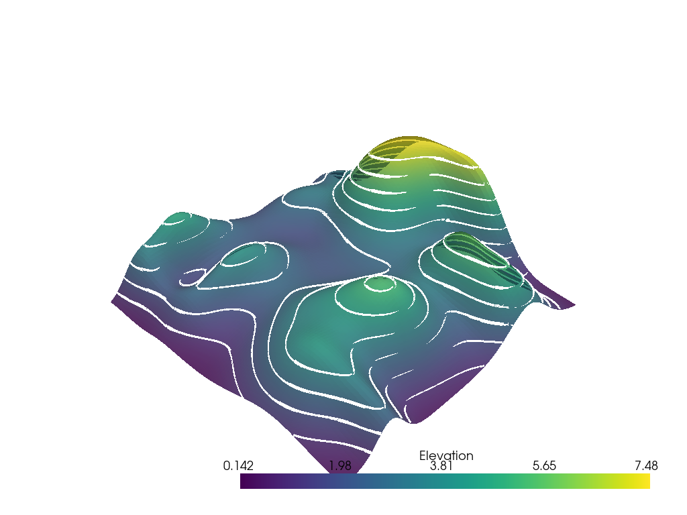

Note
Go to the end to download the full example code. or to run this example in your browser via Binder
Contouring#
Generate iso-lines or -surfaces for the scalars of a surface or volume.
3D meshes can have 2D iso-surfaces of a scalar field extracted and 2D surface meshes can have 1D iso-lines of a scalar field extracted.
import numpy as np
import pyvista as pv
from pyvista import examples
Iso-Lines#
Let’s extract 1D iso-lines of a scalar field from a 2D surface mesh.
mesh = examples.load_random_hills()
help(mesh.contour)
Help on method contour in module pyvista.core.filters.data_set:
contour(isosurfaces=10, scalars=None, compute_normals=False, compute_gradients=False, compute_scalars=True, rng=None, preference='point', method='contour', progress_bar=False) method of pyvista.core.pointset.PolyData instance
Contour an input self by an array.
``isosurfaces`` can be an integer specifying the number of
isosurfaces in the data range or a sequence of values for
explicitly setting the isosurfaces.
Parameters
----------
isosurfaces : int | sequence[float], optional
Number of isosurfaces to compute across valid data range or a
sequence of float values to explicitly use as the isosurfaces.
scalars : str | array_like[float], optional
Name or array of scalars to threshold on. If this is an array, the
output of this filter will save them as ``"Contour Data"``.
Defaults to currently active scalars.
compute_normals : bool, default: False
Compute normals for the dataset.
compute_gradients : bool, default: False
Compute gradients for the dataset.
compute_scalars : bool, default: True
Preserves the scalar values that are being contoured.
rng : sequence[float], optional
If an integer number of isosurfaces is specified, this is
the range over which to generate contours. Default is the
scalars array's full data range.
preference : str, default: "point"
When ``scalars`` is specified, this is the preferred array
type to search for in the dataset. Must be either
``'point'`` or ``'cell'``.
method : str, default: "contour"
Specify to choose which vtk filter is used to create the contour.
Must be one of ``'contour'``, ``'marching_cubes'`` and
``'flying_edges'``.
progress_bar : bool, default: False
Display a progress bar to indicate progress.
Returns
-------
pyvista.PolyData
Contoured surface.
Examples
--------
Generate contours for the random hills dataset.
>>> from pyvista import examples
>>> hills = examples.load_random_hills()
>>> contours = hills.contour()
>>> contours.plot(line_width=5)
Generate the surface of a mobius strip using flying edges.
>>> import pyvista as pv
>>> a = 0.4
>>> b = 0.1
>>> def f(x, y, z):
... xx = x * x
... yy = y * y
... zz = z * z
... xyz = x * y * z
... xx_yy = xx + yy
... a_xx = a * xx
... b_yy = b * yy
... return (
... (xx_yy + 1) * (a_xx + b_yy)
... + zz * (b * xx + a * yy)
... - 2 * (a - b) * xyz
... - a * b * xx_yy
... ) ** 2 - 4 * (xx + yy) * (a_xx + b_yy - xyz * (a - b)) ** 2
...
>>> n = 100
>>> x_min, y_min, z_min = -1.35, -1.7, -0.65
>>> grid = pv.ImageData(
... dimensions=(n, n, n),
... spacing=(
... abs(x_min) / n * 2,
... abs(y_min) / n * 2,
... abs(z_min) / n * 2,
... ),
... origin=(x_min, y_min, z_min),
... )
>>> x, y, z = grid.points.T
>>> values = f(x, y, z)
>>> out = grid.contour(
... 1,
... scalars=values,
... rng=[0, 0],
... method='flying_edges',
... )
>>> out.plot(color='lightblue', smooth_shading=True)
See :ref:`common_filter_example` or
:ref:`marching_cubes_example` for more examples using this
filter.
contours = mesh.contour()
p = pv.Plotter()
p.add_mesh(mesh, opacity=0.85)
p.add_mesh(contours, color="white", line_width=5)
p.show()

Iso-Surfaces#
Let’s extract 2D iso-surfaces of a scalar field from a 3D mesh.
For this example dataset, let’s create 5 contour levels between the values of 50 and 200
contours = mesh.contour(np.linspace(50, 200, 5))
p = pv.Plotter()
p.add_mesh(mesh.outline(), color="k")
p.add_mesh(contours, opacity=0.25, clim=[0, 200])
p.camera_position = [
(-130.99381142132086, 644.4868354828589, 163.80447435848686),
(125.21748748157661, 123.94368717158413, 108.83283586619626),
(0.2780372840777734, 0.03547871361794171, 0.9599148553609699),
]
p.show()
Total running time of the script: (0 minutes 9.192 seconds)